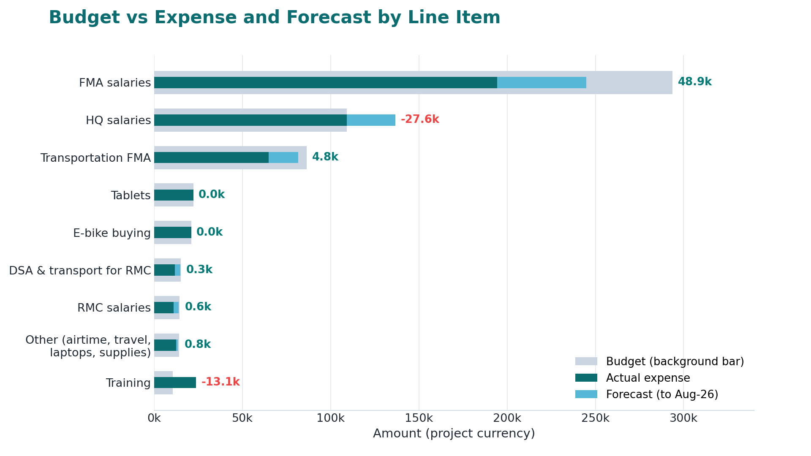

Annual TPM Performance Review
Part 1
C4ED | Center for Evaluation and Development
14 July 2026
Agenda
- Completeness and timeliness of records
- Review of reporting processes, gaps, and improvement opportunities
- Coverage and data quality
- Compliance with WFP policies
- Budget review, including current pressures and cost drivers
Monthly monitoring plans
- All four duty stations submitted a monitoring plan in every month they were operational.
- Bahir Dar, Dessie, and Mekelle have been active since September 2025; Asossa started in December 2025.
- No operational month is missing a plan, so planning coverage is complete.
- Bahir Dar, Dessie, and Mekelle each produced a plan in all 10 months of the period.
- Asossa produced plans in 7 of 10 months, reflecting its later December start.
- No operational month is missing a plan, so planning coverage is complete.
Weekly hot button/flash reports
- Across the year 44 weekly reports were submitted, of which 24 (55%) arrived on Monday, the on-time day.
- Another 17 came on Tuesday (one day late) and 3 on Wednesday (two days late).
- Timeliness slipped from March onward, when Tuesday submissions began to outnumber Monday ones.
Monthly narrative and expenditure reports
- The standard is submission within 10 days of month end, shown by the dashed line.
- Only 4 of 10 monthly reports (November, March, April, June) met the 10-day target.
- The other 6 were late, with September and February slipping past 26 days.
Process and outcome monitoring reports
- The Q1 report (4 activities) was submitted within one month of quarter end, meeting the standard.
- The Q4 report (3 activities) was submitted after one month, missing it.
- With only two quarters reported, the record is mixed and worth watching.
Post-Distribution Monitoring (PDM) deployments

Review of reporting processes
- Weekly report: FMAs are active in flagging issues; Regional and Monitoring Coordinators play a key role in the follow-up; compilation by Management/Support staff.
- Monthly report: feedback?
- Quarterly report: data structure challenges; properly addressing the needs of the Country Office.
- Dashboard solution to address needs; requirement: granting more frequent access to the data.
Coverage and data quality


Staffing and deployment
- FMA deployment stayed high all year, ranging from about 56 to 64 field monitors per month.
- Regional Monitoring Coordinators held steady at 3, while Area Monitoring Coordinators grew from 0 to 2.
- The stable field workforce supports consistent monitoring coverage.
Training provided
- Four training events were delivered over the year, totaling 29 training days.
- Events 1 and 2 were basic training for new monitors in Adama, Mekelle, Dessie, and Asossa.
- Event 3 combined CP cooperation and refresher sessions; Event 4 was a refresher round across four hubs.
This view lists each session by location and month, colored by training type.
Basic training clustered early (September and October) as hubs came online.
Refresher training led the later events in February and May, keeping monitors current.
Management/support staff travel
- Management and support staff made 13 monitoring trips totaling 78 person-days.
- The largest single mobilization was the September visit to Adama (16 person-days, 4 staff).
- One May trip to Asossa records staff assigned but 0 days, which may warrant a data check.
Equipment
- Equipment procurement was one-off rather than recurring.
- The largest distributions were 75 vests and 74 tablets to equip field teams.
- Smaller purchases covered 10 e-bikes, 3 laptops, and 3 printers.
Compliance, risk and accountability considerations
- Integrity and accountability: a few FMAs claim activity despite facts; potential issues with transport/overnight cost reimbursement; in case of dismissal, occasional issues with non-returned tablets (disciplinary process and legal advisor on HR).
- Independence: rotation enforced, to keep monitors alert and to counter the risk of corruption and collusive practices.
- Professional skepticism: high, given the large volume of flagged issues (absence of evidence of obstructive practices).
- Sensitization of FMAs on issues of theft (consumption of WFP nutrition products), through training and clear communication by Regional and Area Monitoring Coordinators.
Compliance review: WFP policies, data protection, and information security
- Content to be added.
Budget review
- FMA salaries are the largest line at about 294k, followed by transportation and HQ salaries.
- Two lines are already over budget: training and HQ salaries (red remainder).
- Most other lines are spending in line with or below budget, with forecast covering the remaining months.
- Category 1 (field operations) has used 74 percent of its budget with 17 percent more forecast, leaving a 9 percent cushion.
- Category 2 (HQ and equipment) is projected about 19 percent over budget once forecast is added.
- Category 3 (travel) is fully spent at 100 percent of its allocation.
- Each line is shown as a share of its own budget, with 100 percent marked by the dashed line.
- Training and HQ salaries cross the 100 percent line, confirming they are over budget.
- Field lines such as FMA salaries and transport sit below 100 percent, holding a positive remainder.

- This static version prints the same expense and forecast figures against each budget line.
- It is provided for the PDF and print handout, where interactive tooltips are not available.
- The over-budget training and HQ salary lines remain the key pressure points.
Finance review
- Monthly spending tracked the monthly budget closely for most of the year.
- Two months ran over budget: October 2025 (about 11k over) and May 2026 (about 5k over).
- Lines including VAT sit above the pre-VAT expense, showing the tax load each month.
- The dotted vertical line marks the end of actuals (May-26); months after it are forecast or still pending.

- This static chart shows expense and forecast as a share of each category budget.
- Category 2 (HQ and equipment) is the main overrun, while field operations retain a cushion.
- It is included for the print handout in place of the interactive version.
Budget review: Current pressures and cost drivers
- Training line projected 123% over its budget; HQ salaries 25% over.
- Transport: inflated costs and limited availability.
- Planning of activities and communication with CPs.
- Security (Amhara region); access to refugee camps (until December 2025).
- Coordination challenges with the CP.
Thank you!
C4ED | Center for Evaluation and Development

C4ED | Center for Evaluation and Development